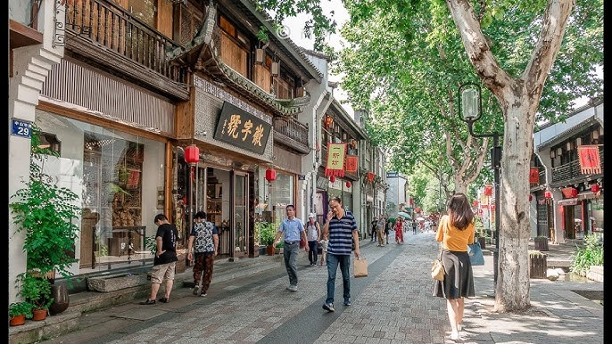

Discover Hangzhou
Hangzhou, the capital of Zhejiang Province, is known as the "Paradise on Earth" for its stunning natural scenery, particularly the West Lake. With a history dating back over 2,000 years, it's a city that seamlessly blends natural beauty with rich cultural heritage.
Suggested Visit Time
Recommended Duration: 2-3 days
Best Time to Visit: March to May (spring) when the cherry blossoms and peach blossoms are in bloom, or September to November (autumn) when the leaves change color.
West Lake
West Lake is the most famous attraction in Hangzhou and a UNESCO World Heritage site. It's known for its stunning scenery, with pagodas, bridges, and gardens surrounding the lake. The lake is divided into five sections by three causeways, and it's a popular place for boating, walking, and enjoying the natural beauty.
According to Chinese legend, West Lake was formed when a phoenix and a dragon brought water from the Milky Way to Hangzhou. Today, it's a symbol of Chinese natural beauty and has inspired countless poets and artists throughout history.
Lingyin Temple
Lingyin Temple is one of the most famous Buddhist temples in China, located at the foot of Lingyin Mountain. Founded in 326 AD, it's known for its ancient architecture, beautiful gardens, and numerous Buddhist statues.
The temple complex includes several halls, pagodas, and grottoes with stone carvings. The most famous is the Feilai Feng (Flying Peak), which has over 300 Buddhist stone carvings dating back to the 10th century. It's a peaceful place to experience Chinese Buddhist culture and history.

Nansong Culture Street
Nansong Culture Street is a vibrant pedestrian street in Hangzhou that celebrates the rich cultural heritage of the Southern Song Dynasty (1127-1279). This historical street features traditional architecture, antique shops, teahouses, and local snack stalls, offering visitors a glimpse into life during the Song Dynasty.
Stroll through the charming alleyways, browse traditional handicrafts, taste authentic Hangzhou snacks, and experience the unique cultural atmosphere of this historical district. It's a perfect place to immerse yourself in Hangzhou's rich history and culture.
Longjing Tea Plantations
Longjing (Dragon Well) tea is one of the most famous teas in China, and the Longjing tea plantations in Hangzhou are where this premium tea is grown. The plantations are located in the hills around West Lake, with terraced fields of tea bushes.
Visitors can tour the plantations, learn about the tea-making process, and enjoy a traditional tea ceremony. The best time to visit is in the spring when the tea leaves are being picked. It's a unique opportunity to experience Chinese tea culture firsthand.
Local Food
Hangzhou cuisine, also known as Zhejiang cuisine, is known for its fresh ingredients, delicate flavors, and beautiful presentation. It's one of the eight major cuisines in China, with a focus on seafood and seasonal ingredients.
West Lake Fish in Vinegar Sauce
A signature dish of Hangzhou, this dish features fresh fish from West Lake cooked in a sweet and sour vinegar sauce. It's known for its delicate flavor and beautiful presentation.
Dongpo Pork
Named after the famous poet Su Dongpo, this dish features braised pork belly that's tender and flavorful. It's cooked with soy sauce, rice wine, and other seasonings until the meat is melt-in-your-mouth tender.
Longjing Shrimp
This dish combines fresh shrimp with Longjing tea leaves, creating a unique flavor that's both delicate and fragrant. The tea leaves add a subtle bitterness that complements the sweet shrimp.
Xiaolongbao
These steamed dumplings are filled with juicy pork and broth. Hangzhou's version of xiaolongbao is known for its thin skin and rich filling, making it a popular snack in the city.